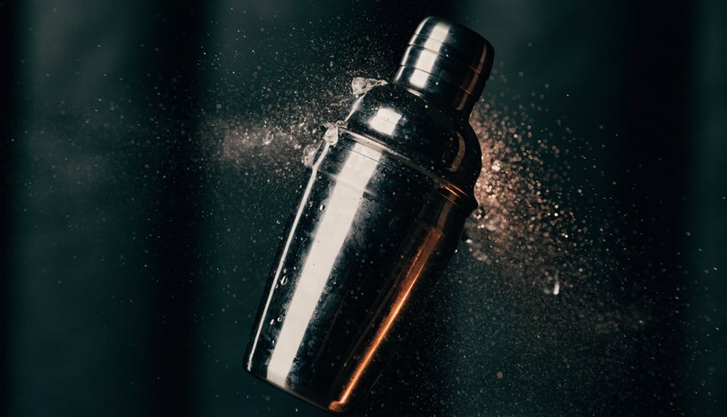

טכניקות הכנה
איך בונים קוקטייל בכוס, מערבבים או מנערים, עם דוגמאות מהמתכונים באתר.
בנייה בכוס
בנייה בכוס היא הוספת המרכיבים ישירות לכוס שממנה שותים. במוחיטו מתחילים בנענע, בסוכר ובליים, ממשיכים בסודה ובקרח ומוסיפים רום.
לחיצה עדינה על הנענע
המטרה היא לשחרר את הארומה. לוחצים בעדינות ומערבבים, בלי להפוך את העלים למחית. את הסודה מחברים בערבוב עדין.
לשלבי המוחיטו
ערבוב
ערבוב מחבר ומקרר את המרכיבים תוך כדי דילול מהקרח, בלי להכניס את כמות האוויר שמוסיף ניעור. מניעים את הכף לאורך הדופן בתנועה רציפה.
בנגרוני שלנו מערבבים ישירות בכוס נמוכה עם קרח. במתכונים אחרים משתמשים בכוס ערבוב, ולאחר מכן מסננים לכוס ההגשה; פועלים לפי ההנחיה במתכון.
מתרגלים עם נגרונימקור להעמקה: Campari Academy: ערבוב קוקטיילים (אנגלית).
ניעור וסינון
באספרסו מרטיני מכניסים את המרכיבים לשייקר עם קרח, סוגרים היטב ומנערים. הניעור החזק מחבר את המרכיבים ויוצר את שכבת הקצף שמאפיינת את המשקה.

מסננים אל כוס ההגשה
בסיום הניעור מוזגים דרך המסננת, כך שהקרח נשאר בשייקר והמשקה מגיע לכוס המקוררת. מסיימים בשלושה פולי קפה.
למתכון אספרסו מרטיניסרטון הכנת מוחיטו
סרטון הכנה מאתר איגוד הברמנים הבינלאומי, IBA. מתחתיו מופיע תקציר הפעולות בעברית.
הסרטון באנגלית. לצפייה בסרטון ב־YouTube.
סדר הפעולות, בעברית
- מחברים בעדינות נענע, סוכר ומיץ ליים.
- מוסיפים מעט סודה וקרח, מוזגים רום ומשלימים בסודה.
- מערבבים בעדינות ומקשטים בנענע ובליים.
מקורות המתכונים: IBA: מוחיטו · נגרוני · אספרסו מרטיני.